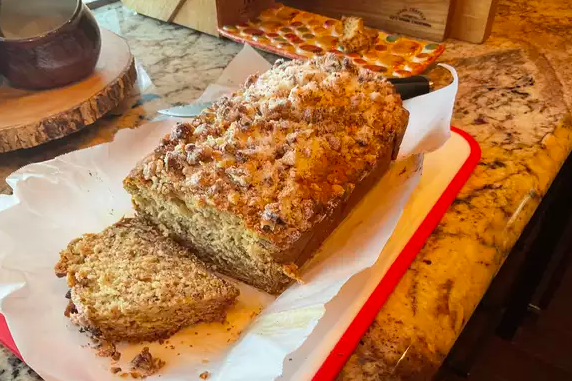

Banana Bread Recipe

Description
Banana bread is a type of bread made from mashed bananas.It is often a moist, sweet, cake-like quick bread;
however there are some banana bread recipes that are yeast raised breads.
Banana bread recipes began being featured in well-known cookbooks across North America as baking soda and baking powder were being
mass produced and becoming available in grocery stores in the 1930s. It appeared in Pillsbury's 1933 Balanced Recipes cookbook,
and later gained more acceptance with the release of the original Chiquita Banana's Recipe Book in 1950.
Ingredients
- ½ cup butter, melted
- ½ cup maple syrup
- 1 egg
- 2 ripe bananas
- ½ teaspoon maple extract
- 3 tablespoons milk
- 2 cups all-purpose flour
- 1 teaspoon baking soda
- ½ teaspoon baking powder
- ¼ cup chopped walnuts
- 3 tablespoons white sugar
Steps
- Preheat oven to 350 degrees F (175 degrees C). Grease a 5x9 inch loaf pan.
- In a large bowl, mix the melted butter and maple syrup. Beat in the egg and bananas, leaving a few small chunks. Stir in the maple extract and milk. In a separate bowl, mix the flour, baking soda, and baking powder, and stir into the banana mixture just until moistened. Transfer to the prepared loaf pan. Mix the nuts and sugar, and sprinkle evenly over the batter.
- Bake 50 minutes in the preheated oven, or until a knife inserted in the center of the loaf comes out clean.